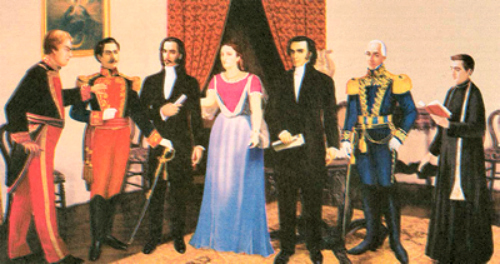

Para comprender lo que pasó ese día, hay que remontarse a octubre del año anterior, cuando en España se vivía un conflicto sucesorio entre Carlos IV y su hijo Fernando VII. Napoleon Bonaparte había intervenido cómo árbitro en la disputa y en mayo de 1808, en la ciudad francesa de Bayona, ambos monarcas españoles renunciaron a su derecho a ocupar el trono que fue entregado por Bonaparte a su hermano José, quien fue llamado el “Rey Intruso”.
Los patriotas criollos decidieron aprovechar el vacío de poder para avanzar su gesta libertaria, fuertemente influida por los ideales de la Ilustración e inspirados por las revoluciones francesa y estadounidense, cuyas ideas y principios habían llegado al Ecuador de la mano de intelectuales como Eugenio Espejo.
El 25 de Diciembre de 1808 cuando se realizó el “Complot de Navidad” o Revolución de los Marqueses en la hacienda El Obraje, en el Valle de los Chillos, en las afueras de Quito. Ahí,varios quiteños como el II Marqués de Selva Alegre Juan Pío Montúfar, el doctor Juan de Dios Morales, el doctor Manuel R. de Quiroga, entre otros, discutieron la creación de la Junta Soberana de Quito que se encargaría de gobernar a Quito aprovechando la incertidumbre que se vivía en España.
Sin embargo, a inicios de marzo de 1809, la Corona española descubrió los planes los apresó, pero al no tener pruebas fueron liberados a los pocos días.
Esto no detuvo a las conspiraciones criollas. La noche del 9 de agosto de 1809 se reunieron en la casa de Manuela Cañizares un grupo integrado por marqueses, criollos y doctores.
Su objetivo era desarrollar estrategias para liberarse del yugo español.
Según el escritor, Manuel de Guzmán Polanco, en su libro Manuela Cañizares: La heroína de la Independencia del Ecuador, muchas personas que apoyaban la independencia desistieron de la idea por temor a las represalias. “¡Cobardes…hombres nacidos para la servidumbre ¿ De qué tenéis miedo…? ¡No hay tiempo que perder…!”, les dijo Manuela Cañizares. Tras la arenga, la suerte quedó echada: se autoproclamaron como la Junta Soberana de Gobierno y planearon la toma de la sede de la presidencia de la Real Audiencia de Quito, el Palacio de Carondelet.
Al amanecer, los 177 soldados de la guarnición colonial, al mando del coronel Juan de Salinas y Zenitagoya, plegaron a la revuelta. Poco después, el doctor Antonio Ante entregó un oficio en Carondelet donde le daban aviso a Manuel Urriez, Conde Ruiz de Castilla y presidente de la Real Audiencia de Quito, que la Junta de Gobierno lo relevaba de sus funciones.
|
 |
El oficio decía:
“El actual estado de incertidumbre en que está sumida la España, el total anonadamiento de todas las autoridades legalmente constituídas, y los peligros a que están expuestas la persona y posesiones de nuestro muy amado Fernando VII de caer bajo el poder del tirano de Europa, han determinado a nuestros hermanos de la presidencia a formar gobiernos provisionales para su seguridad personal, para librarse de las maquinaciones de algunos de sus pérfidos compatriotas indignos del nombre español, y para defenderse del enemigo común.
Los leales habitantes de Quito, imitando su ejemplo y resueltos a conservar para su Rey legítimo y soberano señor esta parte de su reino, han establecido también una Junta Soberana en esta ciudad de San Francisco de Quito, a cuyo nombre y por orden de S. E. el Presidente, tengo a honra el comunicar a US. que han cesado las funciones de los miembros del antiguo gobierno.- Dios, etc.- Sala de la Junta en Quito, a 10 de agosto de 1809.- Juan de Dios Morales, Secretario de lo Interior».
|